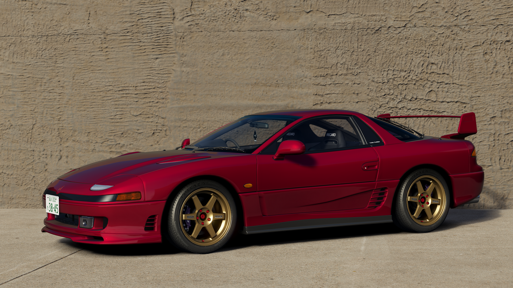
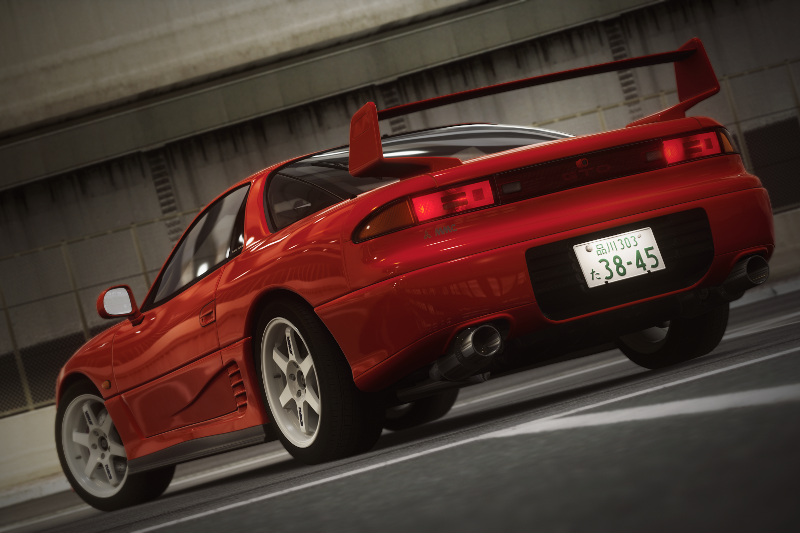

A 1991 Mitsubishi GTO Twin Turbo (called 3000GT in export markets) converted from Gran Turismo 7 to Assetto Corsa in a variety of specifications.
One of my oldest conversions, learned much from it. That being said, it's outdated by my current quality standards and needs a rework, mostly optimization wise.
Uses physics by baker7498 (@baker7498 on Discord).
The car's stock form. 6G72 engine produces 280HP, delivered to all four wheels in a 40:60 F:R split through an open front, viscous center, and limited slip rear differential.
Features active aero - front and rear wings deploy at speed to eliminate aerodynamic lift. This needed a Lua script to work properly since Assetto Corsa by default doesn't let you have wings that rise at a certain speed and lower at a different speed. Also features same-phase rear wheel steering. ECS suspension was also implemented. Extra option C button toggles between Tour and Sport suspension modes, changing damping stiffness.
Goes where you point it, but it's quite heavy and not very nimble. The 5 speed gearbox has very long gears which stifle acceleration speeds when driving around a track. The standard 225 wide 16 inch tyres do not help the experience either - an upgrade to 255 wide 18 inch wheels dramatically improves cornering performance. All in all, very easy to drive, but also very easy to reach its limits.
Tuned version. Modifications include stiff coliovers in place of the stock ECS suspension. 4WS delete, engine upgrades to approx. 450HP. 6-speed gearbox swap from the facelift model and a custom shorter final drive ratio. 255/35/R18 modern sport tyres on lightweight Rays TE37 wheels. Functional KAZE Aerocraft front lip and 1999 facelift rear wing. D2 big brake kit.
  Get me outta here!
Get me outta here!